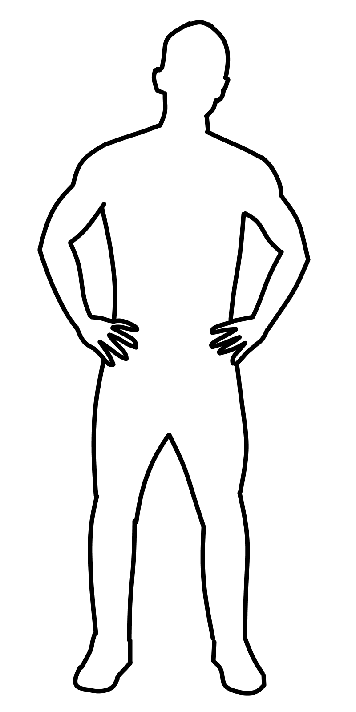

About

I am a first year computer science student at Georgia Tech. My fascination with programming began in middle school, when I first began to ask how computer programs worked. Although no one I knew had an answer, this question set me on a path of discovery. I first began making programs using MIT's block-based language Scratch. Since then I've taught myself Java, Python, and PHP and applied them to various personal and professional projects. Currently, I am interested in algorithm design, physical system simulation, and web development.
In high school, I did research at Georgia Tech's Brown Lab for Cold Molecular Ions and Quantum Information. I worked on the optimization of the Monte Carlo component of their Python quantum circuit simulator. Quantum errors are rare but still very significant, which makes them both difficult and important to simulate. My modifications to the simulator involved sampling only the rare-case error subspaces. This allowed the lab to collect more data in a given amount of time. I plan to return to the lab in the spring to help further improve the simulator.
Beyond my professional work, during the summer of 2016, I organized weekly Super Smash Bros. Melee tournaments at my house and collected data on player performance. In order to help attendees improve at the game, I built a website using PHP and SQL that displays player and match statistics and analyzes head-to-head matchups. This public portal was a driving force in the improvement of the many players who otherwise misunderstood the weak points of their play. I plan to implement the code that I wrote into an open source package that can be used by leagues and regions that have unused data so that they can release player statistics and create better informed power rankings.
In the near future, I hope to get experience applying my programming skills in an industry context so that I can see how computer science is used in business. I will also plan to continue asking questions and exploring new realms of knowledge through research and personal projects.
In high school, I did research at Georgia Tech's Brown Lab for Cold Molecular Ions and Quantum Information. I worked on the optimization of the Monte Carlo component of their Python quantum circuit simulator. Quantum errors are rare but still very significant, which makes them both difficult and important to simulate. My modifications to the simulator involved sampling only the rare-case error subspaces. This allowed the lab to collect more data in a given amount of time. I plan to return to the lab in the spring to help further improve the simulator.
Beyond my professional work, during the summer of 2016, I organized weekly Super Smash Bros. Melee tournaments at my house and collected data on player performance. In order to help attendees improve at the game, I built a website using PHP and SQL that displays player and match statistics and analyzes head-to-head matchups. This public portal was a driving force in the improvement of the many players who otherwise misunderstood the weak points of their play. I plan to implement the code that I wrote into an open source package that can be used by leagues and regions that have unused data so that they can release player statistics and create better informed power rankings.
In the near future, I hope to get experience applying my programming skills in an industry context so that I can see how computer science is used in business. I will also plan to continue asking questions and exploring new realms of knowledge through research and personal projects.